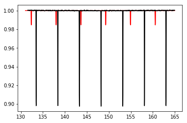

Exoplanet minimization fitting with batman¶
In [1]:
%load_ext autoreload
%autoreload 2
%matplotlib inline
from lightkurve import KeplerTargetPixelFile
import numpy as np
import matplotlib.pyplot as plt
from lightkurve.injection import TransitModel
import lightkurve.injection as inj
import scipy.optimize as op
import batman
In [2]:
tpf_star = KeplerTargetPixelFile.from_archive(1867630, quarter=1)
lc_star = tpf_star.to_lightcurve(aperture_mask='all')
Normalize the initial lightcurve and inject a normalized lc into that:
In [3]:
#Remove nans and outliers
lc_star = lc_star.remove_nans().remove_outliers()
lc_star = lc_star.normalize()
plt.plot(lc_star.time, lc_star.flux)
Out[3]:
[<matplotlib.lines.Line2D at 0xa25b6ee10>]
Create transit model using batman:
In [8]:
params = batman.TransitParams() #object to store transit parameters
params.t0 = 133 #time of inferior conjunction
params.per = 5. #orbital period
params.rp = 0.3 #planet radius (in units of stellar radii)
params.a = 15. #semi-major axis (in units of stellar radii)
params.inc = 90. #orbital inclination (in degrees)
params.ecc = 0. #eccentricity
params.w = 90. #longitude of periastron (in degrees)
params.limb_dark = "nonlinear" #limb darkening model
params.u = [0.5, 0.1, 0.1, -0.1] #limb darkening coefficients [u1, u2, u3, u4]
#t = lc_star.time
t = np.linspace(131, 165, 1621) #times at which to calculate light curve
m = batman.TransitModel(params, t) #initializes model
flux = m.light_curve(params)
This is the transit model to be added to the Kepler LC:
In [9]:
plt.plot(t, flux)
Out[9]:
[<matplotlib.lines.Line2D at 0xa2b6a3550>]
In [10]:
lcinj_time = lc_star.time
lcinj_flux = lc_star.flux * flux
lcinj_fluxerr = lc_star.flux_err
This is the injected light curve (not a SyntheticLightCurve class – hopefully things will still work the same)
In [11]:
plt.plot(lcinj_time, lcinj_flux)
Out[11]:
[<matplotlib.lines.Line2D at 0xa2baf3908>]
Now let’s try to recover this using scipy.optimize.minimize.
In [12]:
import scipy.optimize as op
In [ ]:
def return_model(theta):
period, rprs, T0 = theta
params = batman.TransitParams() #object to store transit parameters
params.t0 = T0 #time of inferior conjunction
params.per = period #orbital period
params.rp = rprs #planet radius (in units of stellar radii)
params.a = 15. #semi-major axis (in units of stellar radii)
params.inc = 90. #orbital inclination (in degrees)
params.ecc = 0. #eccentricity
params.w = 90. #longitude of periastron (in degrees)
params.limb_dark = "nonlinear" #limb darkening model
params.u = [0.5, 0.1, 0.1, -0.1] #limb darkening coefficients [u1, u2, u3, u4]
t = np.linspace(131, 165, 1621)
m = batman.TransitModel(params, t, fac=1.0)
flux = m.light_curve(params)
return flux
In [13]:
def ln_like(theta):
period, rprs, T0 = theta
params = batman.TransitParams() #object to store transit parameters
params.t0 = T0 #time of inferior conjunction
params.per = period #orbital period
params.rp = rprs #planet radius (in units of stellar radii)
params.a = 15. #semi-major axis (in units of stellar radii)
params.inc = 90. #orbital inclination (in degrees)
params.ecc = 0. #eccentricity
params.w = 90. #longitude of periastron (in degrees)
params.limb_dark = "nonlinear" #limb darkening model
params.u = [0.5, 0.1, 0.1, -0.1] #limb darkening coefficients [u1, u2, u3, u4]
t = np.linspace(131, 165, 1621)
m = batman.TransitModel(params, t, fac=1.0)
flux = m.light_curve(params)
inv_sigma2 = 1.0/(lcinj_fluxerr**2)
chisq = (np.sum((lcinj_flux - flux)**2 * inv_sigma2))
lnlikelihood = -0.5*chisq
return lnlikelihood
In [17]:
rprs_guess = 0.3
In [ ]:
In [ ]:
In [20]:
ln_like([5.0, rprs_guess, 133])
Out[20]:
-11884.183960341681
In [30]:
def neg_ln_posterior(theta):
return -ln_like(theta)
In [35]:
neg_ln_posterior([5, 0.29, 134])
Out[35]:
28776430.925231714
In [32]:
%%time
x0 = [6, 0.25, 132]
result = op.minimize(neg_ln_posterior, x0)
CPU times: user 153 ms, sys: 2.13 ms, total: 155 ms
Wall time: 156 ms
In [33]:
print(result)
period_f, rprs_f, T0_f = result.x
print(rprs_f)
fun: 14728868.281088136
hess_inv: array([[ 8.42648778e-10, 3.61292422e-09, -2.80388042e-09],
[ 3.61292422e-09, 2.36225993e-08, -1.56148873e-08],
[ -2.80388042e-09, -1.56148873e-08, 1.10167134e-08]])
jac: array([ 1.25 , 0.5 , 0.875])
message: 'Desired error not necessarily achieved due to precision loss.'
nfev: 460
nit: 20
njev: 90
status: 2
success: False
x: array([ 5.64192898e+00, 1.16154779e-01, 1.32357967e+02])
0.116154778995
In [36]:
params = batman.TransitParams() #object to store transit parameters
params.t0 = T0_f #time of inferior conjunction
params.per = period_f #orbital period
params.rp = rprs_f #planet radius (in units of stellar radii)
params.a = 15. #semi-major axis (in units of stellar radii)
params.inc = 90. #orbital inclination (in degrees)
params.ecc = 0. #eccentricity
params.w = 90. #longitude of periastron (in degrees)
params.limb_dark = "nonlinear" #limb darkening model
params.u = [0.5, 0.1, 0.1, -0.1] #limb darkening coefficients [u1, u2, u3, u4]
t = np.linspace(131, 165, 1621) #times at which to calculate light curve
m_fit = batman.TransitModel(params, t) #initializes model
flux_fit = m.light_curve(params)
In [37]:
plt.plot(t, flux_fit, color='r')
plt.plot(lcinj_time, lcinj_flux, color='k')
Out[37]:
[<matplotlib.lines.Line2D at 0x1c17532390>]

Plot the chi square values over some tested ranges of period, rprs, and T0. minimize is not finding the minima – could this be because the plots are not smooth?
In [232]:
rprs_arr = np.linspace(0.01, 0.5, 50)
chisqs = rprs_arr*0.0
for i, rprs in enumerate(rprs_arr):
chisq = neg_ln_posterior([5, rprs, 133])
chisqs[i] = chisq
chisqs
plt.plot(rprs_arr, chisqs)
plt.axvline(0.3, color='k')
plt.axvline(rprs_f, color='r')
Out[232]:
<matplotlib.lines.Line2D at 0x1c1f46eb70>
In [233]:
per_arr = np.linspace(0, 15, 40)
print(per_arr)
chisqs = per_arr*0.0
for i, per in enumerate(per_arr):
chisq = neg_ln_posterior([per, 0.3, 133])
chisqs[i] = chisq
plt.cla()
plt.plot(per_arr, chisqs)
plt.axvline(5, color='k')
plt.axvline(period_f, color='r')
[ 0. 0.38461538 0.76923077 1.15384615 1.53846154
1.92307692 2.30769231 2.69230769 3.07692308 3.46153846
3.84615385 4.23076923 4.61538462 5. 5.38461538
5.76923077 6.15384615 6.53846154 6.92307692 7.30769231
7.69230769 8.07692308 8.46153846 8.84615385 9.23076923
9.61538462 10. 10.38461538 10.76923077 11.15384615
11.53846154 11.92307692 12.30769231 12.69230769 13.07692308
13.46153846 13.84615385 14.23076923 14.61538462 15. ]
Out[233]:
<matplotlib.lines.Line2D at 0x1c1f37ae80>
In [234]:
T0_arr = np.linspace(130, 135, 40)
chisqs = T0_arr*0.0
for i, T0 in enumerate(T0_arr):
chisq = neg_ln_posterior([5, 0.3, T0])
chisqs[i] = chisq
plt.plot(T0_arr, chisqs)
plt.axvline(133, color='k')
plt.axvline(T0_f, color='r')
Out[234]:
<matplotlib.lines.Line2D at 0x1c1ef69fd0>
In [ ]:
In [ ]: